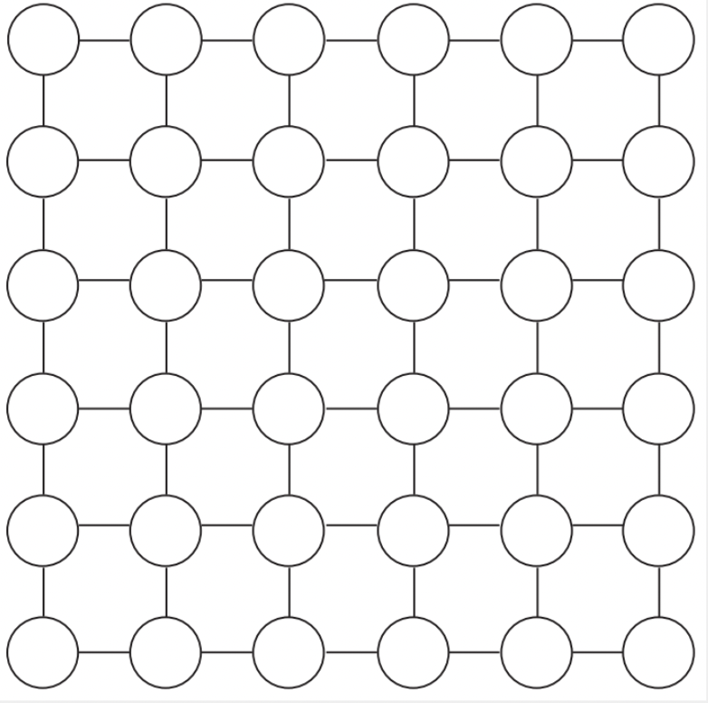

Aproximaciones
Contenidos
Ejercicio resuelto
Solución
Ejercicios propuestos
-
(★★) Dado un grafo en forma de grilla como el dado a continuación (y también a los del ejercicio 2), donde cada vértice tiene un peso $w(v)$, se desea maximizar la sumatoria de los pesos de un Independent Set sobre dicho grafo.
a. Dar un algoritmo greedy que sirva de aproximación para la solución al problema.
b. Demostrar que cualquier vértice es parte de la solución aproximada, o bien tiene peso menor (o igual) a alguno de sus adyacentes, que es en efecto parte de dicha solución.
c. Analizar qué tan buena es la aproximación.

-
(★★★) El 2-Partition Problem como problema de optimización se describe tal que: Dado un conjunto de números positivos , se particionan los números en dos subconjuntos y (con intersección vacía y unión = T) de forma de minimizar la sumatoria de cualquiera de los subconjuntos ().
Para este problema, podemos plantear el siguiente algoritmo aproximado: Inicializar la solución como dos subconjuntos vacíos recorriendo los elementos de , para cada elemento se lo coloca en el subconjunto con menor sumatoria hasta el momento.
Demostrar que el algoritmo propuesto es una -Aproximación.
-
(★★★) Un centro de fotocopiado tiene un conjunto de máquinas para procesar diferentes trabajos. Las mismas las compró en dos momentos diferentes. Teniendo fotocopiadoras de la primera compra y fotocopiadoras más modernas de la segunda. Como la tecnología mejoró las más nuevas trabajan el doble de rápido que las viejas. Cada día recibe un conjunto de pedidos con diferentes longitudes. Desea asignar las tareas a las máquinas de tal forma de terminar lo antes posible la jornada de trabajo.
Proponer un algoritmo de aproximación de tal forma que la diferencia con el óptimo sea como mucho 3 veces mayor.